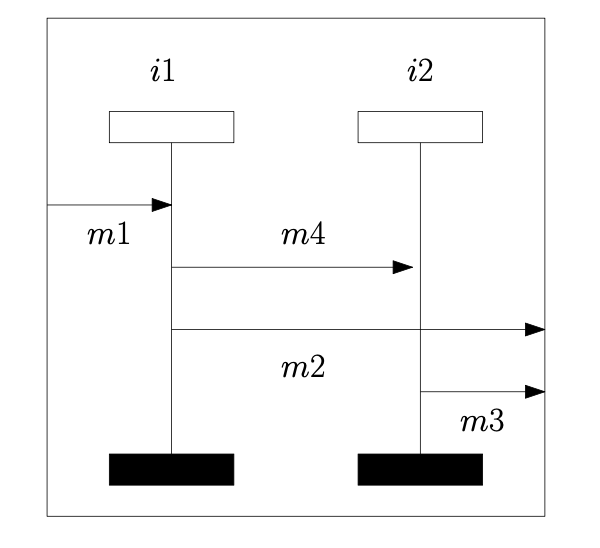
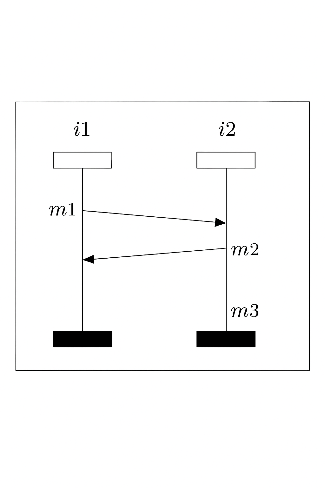
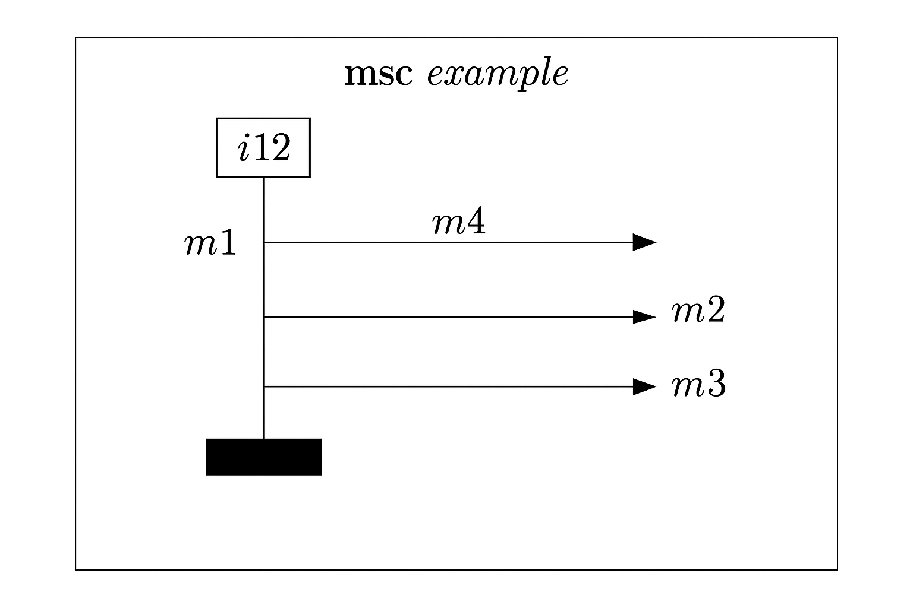
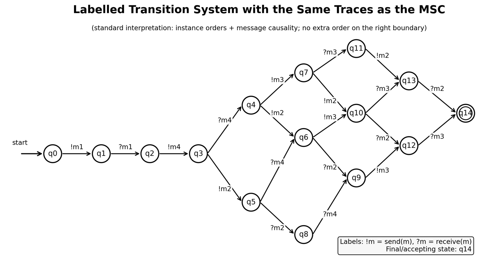

Annotations / GPT-5.4-Thinking Deep / Example 3.docx
Hi, consider the following message sequence chart. Please identify the events in this MSC.

In a Message Sequence Chart (MSC), the basic events are usually the sending and receiving of messages.
From the diagram, there are two instances/lifelines:
i1
i2
and four messages:
m1
m2
m3
m4
1) Events present in the diagram
Each message corresponds to two events:
Message m1
send(m1): from the left environment/boundary
receive(m1): at instance i1
Message m4
send(m4): from i1
receive(m4): at i2
Message m2
send(m2): from i1
receive(m2): at the right environment/boundary
Message m3
send(m3): from i2
receive(m3): at the right environment/boundary
2) Event list
A complete event set is therefore:
E = {s(m1), r(m1), s(m4), r(m4), s(m2), r(m2), s(m3), r(m3)}
where:
s(m)= send event of message m
r(m)= receive event of message m
3) Ordering of events on each instance
From top to bottom on each lifeline:
On i1
receive(m1)
send(m4)
send(m2)
So:
r(m1) < s(m4) < s(m2)
On i2
receive(m4)
send(m3)
So:
r(m4) < s(m3)
On the environment/boundary
Left boundary: send(m1)
Right boundary: receive(m2) occurs above receive(m3), so visually:
r(m2) < r(m3)
4) If you want the events named explicitly
You could name them as:
e1 = s(m1)
e2 = r(m1)
e3 = s(m4)
e4 = r(m4)
e5 = s(m2)
e6 = r(m2)
e7 = s(m3)
e8 = r(m3)
If you want, I can also turn this into the partial order / Hasse diagram of the MSC events.
Task type: Identifying events
Judgment: Incorrect.
(inconsistent with event list of the other MSCs analysed by the same model).
Question:
What is the correct ordering between receiving m1 and sending m4?
The correct ordering is:
$$receive(m1)\text{\:\,} < \text{\:\,}send(m4)$$
Why?
On lifeline i1, events are ordered top to bottom in an MSC.
In the diagram:
m1is received by i1first (arrow from the left boundary into i1)
Then m4is sent from i1to i2
So the receive event of m1must occur before the send event of m4.
In words
Receiving m1precedes sending m4.
If you want, I can also give the full partial order of all events in the MSC.
Task type: Identifying event orders
Judgment: Correct.
Question:
Based on the diagram above, generate a message sequence chart in which message m4 is abstracted away. Please produce the resulting MSC after abstracting from m4.
After abstracting away message m4, the visible messages are:
m1: environment → i1
m2: i1→environment
m3: i2→environment
1) Event set after abstraction
We remove the two m4-events:
send(m4)
receive(m4)
So the remaining events are:
E′ = s(m1), r(m1), s(m2), r(m2), s(m3), r(m3)
2) Ordering that remains after hiding m4
From the original chart:
On i1:
r(m1) < s(m4) < s(m2)
On i2:
r(m4) < s(m3)
Message causality for m4:
s(m4) < r(m4)
Therefore, after removing m4, the induced ordering between the remaining visible events includes:
r(m1) < s(m2)
and also, by transitivity through the hidden message m4,
r(m1) < s(m3)
So the abstracted partial order is:
s(m1) < r(m1) < s(m2) < r(m2)
s(m1) < r(m1) < s(m3) < r(m3)
with no ordering forced between s(m2)and s(m3).
3) Resulting abstracted MSC (semantic view)
A compact way to present the result is:
environment i1 i2 environment
| | | |
| --- m1 ---> | | |
| | | |
| | --- m2 ------------------------------> |
| | | |
| | | --- m3 -----------> |
| | | |
4) Important subtlety
There is one important theoretical point:
In the original MSC, m4was the only thing that transmitted causality from i1to i2.
After hiding m4, the dependency
r(m1) < s(m3)
still exists semantically.
But a plain basic MSC drawing with only m1, m2, m3does not explicitly show that dependency, because there is no visible interaction left between i1and i2.
So:
If you want the visible chart only
the diagram above is the expected abstraction.
If you want the exact semantic abstraction
then the result is really the partial order:
s(m1) < r(m1) < s(m2) < r(m2)
r(m1) < s(m3) < r(m3)
which is stronger than what an ordinary bMSC picture can directly express without adding some extra notation.
5) Final answer
The MSC after abstracting from m4is the one containing only m1, m2, and m3:
m1received by i1
m2sent from i1to the environment
m3sent from i2to the environment
with the inherited causal constraint:
r(m1) < s(m2), r(m1) < s(m3)
If you want, I can also draw the abstracted MSC as a neat LaTeX/TikZ diagram or as a formal pomset.
Please produce an image of MSC.

Task type: Abstraction
Judgment: Incorrect.
Question:
What is the order between receiving m1 and sending m3 in the resulting MSC in which m4 is abstracted away.
In the abstracted result (where m4is hidden/abstracted away semantically), the ordering is:
$$receive(m1)\text{\:\,} < \text{\:\,}send(m3)$$
Why?
In the original MSC, the following chain holds:
$$receive(m1)\text{\:\,} < \text{\:\,}send(m4)\text{\:\,} < \text{\:\,}receive(m4)\text{\:\,} < \text{\:\,}send(m3)$$
So by transitivity:
$$receive(m1)\text{\:\,} < \text{\:\,}send(m3)$$
Important nuance
There are two ways people sometimes talk about “abstracting away m4”:
1. Semantic abstraction / hiding
You remove m4as a visible message but preserve the causal dependencies it induced.
Then the correct relation is:
r(m1) < s(m3)
2. Just erasing m4from the picture
If you literally delete the m4arrow from the drawing and keep only visible arrows, then a basic MSC picture may no longer explicitly show any dependency between i1and i2.
So syntactically, the order may become not directly expressible in the reduced picture.
Final answer
If you mean the proper abstraction of the original MSC, then:
$$\boxed{receive(m1)\text{\:\,} < \text{\:\,}send(m3)}$$
So receiving m1must happen before sending m3.
If you want, I can also write the full partial order of the abstracted MSC in formal notation.
Task type: Abstraction
Judgment: Correct.
Question:
Consider the original MSC given below. Merge instance i1 and i2; produce the message sequence chart after merging.
After merging instances i1and i2into one instance, say i_12, the resulting MSC has:
one merged instance i_12
the environment on the left/right boundary as before
m1still entering from the left boundary to i_12
m2still going from i_12to the right boundary
m3still going from i_12to the right boundary
m4becomes an internal communication inside the merged instance i_12
1) Read the original MSC carefully
From the original diagram:
m1: environment → i1
m4: i1 → i2
m2: i1→environment
m3: i2→environment
Local orders on the two lifelines are:
On i1
r(m1) < s(m4) < s(m2)
On i2
r(m4) < s(m3)
And message causality for m4:
s(m4) < r(m4)
So altogether:
r(m1) < s(m4) < r(m4) < s(m3)
and
s(m4) < s(m2)
Notice an important point:
there is no forced order between s(m2)and r(m4)
So after merging, those two events remain concurrent / unordered unless one chooses a particular linearization.
2) Result after merging i1and i2
Let the merged instance be called i_12.
The events on i_12are now:
receive m1
send m4(internal)
receive m4(internal)
send m2
send m3
with ordering constraints:
r(m1) < s(m4)
s(m4) < r(m4)
s(m4) < s(m2)
r(m4) < s(m3)
Equivalently:
r(m1) < s(m4)<,r(m4),,s(m2),
with
r(m4) < s(m3)
and no order between s(m2)and r(m4).
3) The merged MSC (semantic form)
A precise way to show the merged chart is:
left env i12 right env
| | |
| ---- m1 ------> | |
| | |
| | -- m4 (internal send) -- |
| | <- m4 (internal recv) ---/ |
| | |
| | ---- m2 ----------------------> |
| | |
| | ---- m3 ----------------------> |
| | |
But this picture alone may accidentally suggest a total order.
The exact merged semantics is:
m4is now internal to i_12
m2is enabled after s(m4)
m3is enabled after r(m4)
s(m2)and r(m4)are not ordered
4) Best MSC-style representation
If you want the most faithful MSC after merging, then the merged lifeline should use a co-region (or some notation for unordered events) after s(m4):
left env i12 right env
| | |
| ---- m1 -------> | |
| | |
| | -- m4 (internal send) -- |
| | |
| | [ co-region: |
| | recv(m4) || send(m2) ] |
| | |
| | -------- m3 --------------------> |
| | |
This means:
first m1is received,
then the internal send of m4,
then receive(m4) and send(m2) are unordered,
and finally m3is sent after receive(m4).
5) Final answer
Resulting MSC after merging i1and i2:
instances: i_12only (instead of separate i1and i2)
visible external messages:
m1: environment → i_12
m2: i_12→environment
m3: i_12→environment
internal message:
m4: becomes an internal/self communication of i_12
Exact ordering constraints:
r(m1) < s(m4), s(m4) < r(m4), s(m4) < s(m2), r(m4) < s(m3)
with
$$\boxed{\text{(s(m2))~and~(r(m4))~are~unordered}}$$
If you want, I can also draw the merged MSC as a clean image in the same style as the original figure.

Task type: Abstraction
Judgment: Incorrect.
Question:
Consider the original MSC given below. Please produce the set of all of its traces.
To compute all traces of the MSC, I treat a trace as a linearization of the partial order of events in the chart.
1) Events in the original MSC
From the diagram, the events are:
s(m1): send m1from the left environment
r(m1): receive m1at i1
s(m4): send m4from i1
r(m4): receive m4at i2
s(m2): send m2from i1to the right environment
r(m2): receive m2at the right boundary
s(m3): send m3from i2to the right environment
r(m3): receive m3at the right boundary
2) Partial-order constraints
Reading the two lifelines top-to-bottom gives:
On i1
r(m1) < s(m4) < s(m2)
On i2
r(m4) < s(m3)
Message causality
s(m1) < r(m1), s(m4) < r(m4), s(m2) < r(m2), s(m3) < r(m3)
So altogether:
s(m1) < r(m1) < s(m4)
s(m4) < r(m4) < s(m3) < r(m3)
s(m4) < s(m2) < r(m2)
3) Set of all traces
There is one subtle ambiguity:
If the right boundary is treated as imposing an order top-to-bottom, then r(m2) < r(m3).
If the right boundary is treated as just “the environment” with no local ordering, then r(m2)and r(m3)are unordered unless forced by other constraints.
So I will give both versions.
A. Traces without imposing an order on the right boundary
Then the MSC has 10 traces.
Using shorthand:
s1 = s(m1)
r1 = r(m1)
s4 = s(m4)
r4 = r(m4)
s2 = s(m2)
r2 = r(m2)
s3 = s(m3)
r3 = r(m3)
the set of traces is:
{⟨s1, r1, s4, r4, s2, r2, s3, r3⟩,
⟨s1, r1, s4, r4, s2, s3, r2, r3⟩,
⟨s1, r1, s4, r4, s2, s3, r3, r2⟩,
⟨s1, r1, s4, r4, s3, r3, s2, r2⟩,
⟨s1, r1, s4, r4, s3, s2, r2, r3⟩,
⟨s1, r1, s4, r4, s3, s2, r3, r2⟩,
⟨s1, r1, s4, s2, r2, r4, s3, r3⟩,
⟨s1, r1, s4, s2, r4, r2, s3, r3⟩,
⟨s1, r1, s4, s2, r4, s3, r2, r3⟩,
⟨s1, r1, s4, s2, r4, s3, r3, r2⟩}
B. Traces with right-boundary order r(m2) < r(m3)
If you also impose the visual top-to-bottom order on the right boundary, then the set reduces to 6 traces:
{⟨s1, r1, s4, r4, s2, r2, s3, r3⟩,
⟨s1, r1, s4, r4, s2, s3, r2, r3⟩,
⟨s1, r1, s4, r4, s3, s2, r2, r3⟩,
⟨s1, r1, s4, s2, r2, r4, s3, r3⟩,
⟨s1, r1, s4, s2, r4, r2, s3, r3⟩,
⟨s1, r1, s4, s2, r4, s3, r2, r3⟩}
4) Final answer
If your course/textbook treats only the instance lifelines i1and i2as ordered objects, then the correct set is the 10 traces above.
If your course/textbook also treats the right boundary/environment events as ordered top-to-bottom, then the correct set is the 6 traces above.
Most common interpretation for this kind of question
For the MSC as drawn, the safest formal answer is usually:
$$\boxed{\text{all~linearizations~of~the~partial~order~induced~by~}i1,i2\text{~and~message~causality}}$$
which gives the 10 traces listed in part A.
If you want, I can also present the same answer in:
message notation such as !m1 ?m1 !m4 ?m4 ..., or
as a Hasse diagram / pomset of the MSC.
Task type: Traces
Judgment: Correct.
Question:
Please draw a labelled transition system that has the same traces as the MSC. Please produce one static picture, no interactive visualisation.
Below is a static labelled transition system (LTS) whose traces are the same as the MSC, using the event labels
!m= send of message m
?m= receive of message m
and using the standard interpretation from our earlier discussion (instance orders + message causality, without adding an extra order on the right boundary).

Notes
Start state: q0
Accepting/final state: q14(double circle)
This LTS accepts exactly the linearizations of the MSC partial order that we previously listed.
If you want, I can also produce:
a smaller/minimized LTS, or
the alternative LTS for the interpretation where the right-boundary receives are ordered $\text{\:\,}r(m2) < r(m3)\text{\:\,}$.
Task type: LTS
Judgment: Correct.